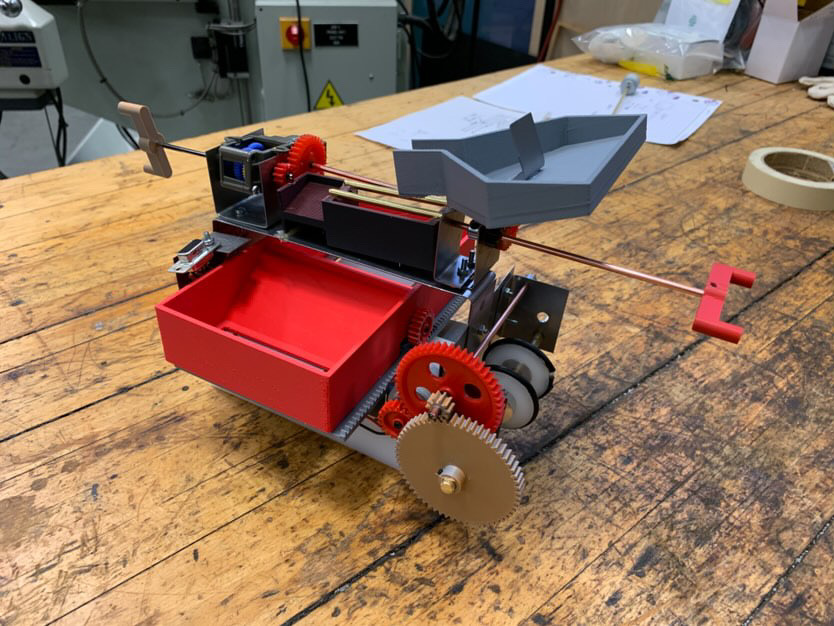
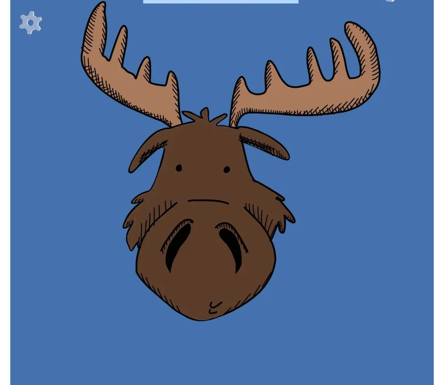

Projects
Here are some of the projects I’ve worked on both at the University, and in internships
Hydrogen Injection System for YEG Airport Snow Mauler

Project with Diesel Tech Industries converting one of the edmonton airports snow maulers from diesel fuel to hydrogen-diesel dual fuel. I worked alongside a team of engineers in designing the hydrogen injection apparatus that is retrofitted to the preexisting engine

MecE 260 Design Challenge
Worked with a group of peers to create a vehicle that retrieves different sized balls (symbolic of ores), sorts them and then travels along a monorail to deliver the ores to respective containers. This was done as a part of a design class.
Graphic design work for the mechanical engineering club
Graphic design work using digital art and photoshop softwares. The designwork included: student prof social ticket design, logo design for merchandaise, social media and poster advertisements.